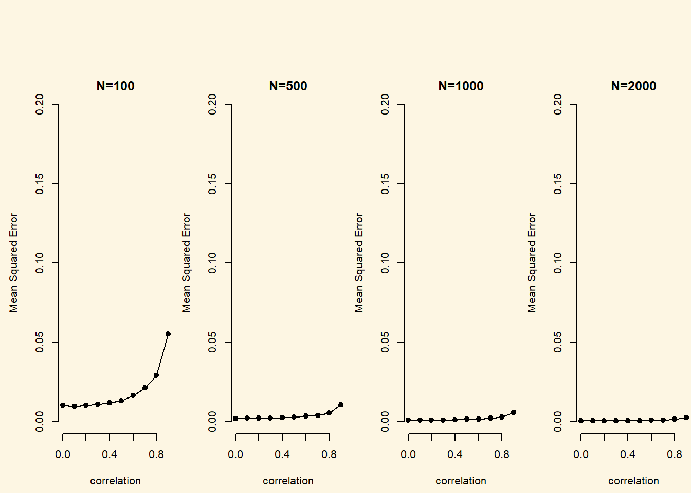
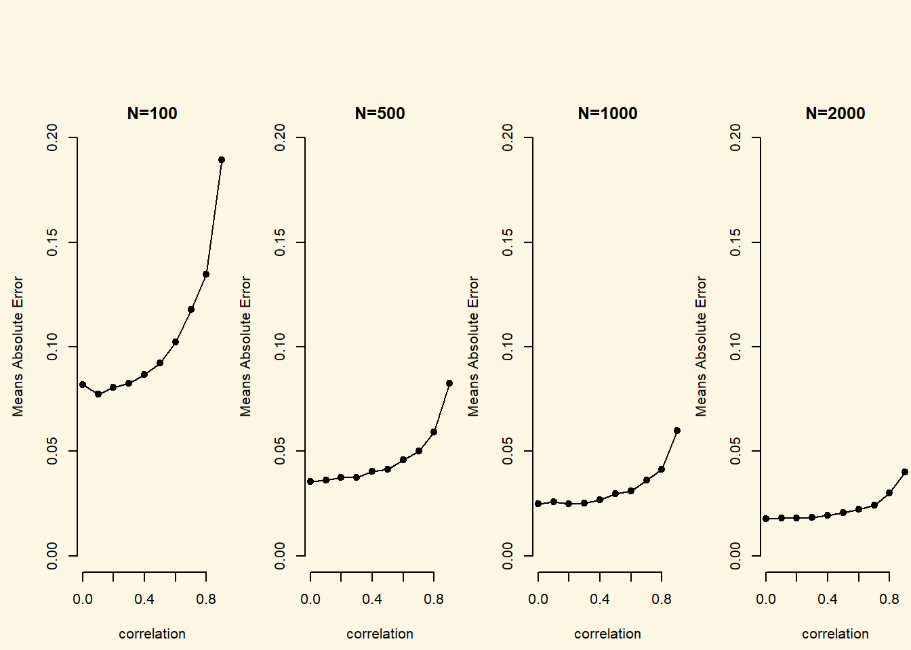
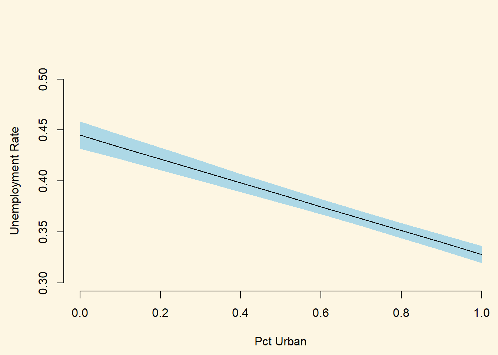

Chapter 8 Simulation and Monte Carlos
8.1 Seminar
In this exercise, we introduce a simulation approach to quantifying uncertainty and Monte Carlo simulation.
8.1.1 Monte Carlo simulation
In Monte Carlo simulation we create a fake data set were we define a causal model of the outcome directly. That way, we know what the true outcome has to be. We can then keep everything constant but make on change to our estimation to assess the effect of that change on our prediction accuracy. We could, for instance, be interested in finding out whether our prediction accuracy suffers when independent variables are highly correlated.
So, we set up an MC analysis to see whether problems of multicolinearity (high correlation between explanatory variables) go away as the sample size increases. The goal is to see how well we are able to retrieve the true value of \(\beta_{1}\) for varying strengths of correlation and sample sizes.
The basic setup of the simulation is as follows:
# the number of runs (simulations)
sim.n <- 1000
# sequence of low to high correlation
Rho <- seq(from = 0, to = .9,length.out=10)
# vector of sample sizes
sample.N <- c(100, 500, 1000, 2000)We create a container beta.catcher that stores coefficient values for different simulations. The container is a 3-dimensional array where the first dimension is the number of simulations, the second is the sample size, the third is correlation.
# rows = simulations, columns = sample size, layers = correlation
beta.catcher <- array(NA, c(sim.n, 4, 10))We start simulating. This will take a while because we are iterating through \(sim.n * Rho * sample.N\) iterations, i.e. \(40,000\) iterations. Each time we regress \(y\) on our covariates.
# loop over the correlations
for (i in 1:length(Rho)){
# loop over sample sizes
for (j in 1:4){
# loop over the random draws (number of simulations)
for (k in 1:sim.n){
# current correlation
rho <- Rho[i]
# current sample size
sample.n <- sample.N[j]
# variance covariance matrix current corr on off-diagonal
varL <- matrix(c (1,rho,rho,1) , nrow = 2, ncol = 2)
# random draw of covariates as many as sample size
XX <- MASS::mvrnorm(sample.n, rep(0,2), varL)
# random noise
e <- rnorm(sample.n)
# the true data generation process b1 = 1; b2 = 1
y <- XX %*% c(1,1) + e
# we regress the true y on the covariates and extract beta 1
beta.catcher[k,j,i] <- coef(lm(y~XX))[2]
} # end of loop over number of sims
} # end of loop over sample sizes
} # end of loop over correlationsYou can have a look at the container by calling it with beta.catcher. We remind ourselves of the dimensions with:
[1] 1000 4 10We take the MSE of each coefficient estimate in the container. This is an element-wise operation so the resulting object error.sq has the same dimensions as the container.
We average over the simulations by taking the column means. This returns a matrix where the rows are now the different sample sizes (previously in the columns) and the columns are the correlations (previously in the layers). The matrix mse.beta, thus, has 4 rows and 10 columns.
To show the effect of multicolinearity for increasing levels of correlation and for increasing sample sizes, we plot correlation on the x-axis and the MSE on the y-axis in four plots where sample size increases by plot.
par(mfrow=c(1,4))
plot(c(0:9)/10,mse.beta1[1,], xlab="correlation", ylab="Mean Squared Error", type="o", pch=19, bty="n", main="N=100", ylim=c(0,.2))
plot(c(0:9)/10,mse.beta1[2,], xlab="correlation", ylab="Mean Squared Error", type="o", pch=19, bty="n", main="N=500", ylim=c(0,.2))
plot(c(0:9)/10,mse.beta1[3,], xlab="correlation", ylab="Mean Squared Error", type="o", pch=19, bty="n", main="N=1000", ylim=c(0,.2))
plot(c(0:9)/10,mse.beta1[4,], xlab="correlation", ylab="Mean Squared Error", type="o", pch=19, bty="n", main="N=2000", ylim=c(0,.2))
error.abs <- abs(beta.catcher-1)
mae.beta1 <- colMeans(error.abs)
par(mfrow=c(1,4))
plot(c(0:9)/10,mae.beta1[1,], xlab="correlation", ylab="Means Absolute Error", type="o", pch=19, bty="n", main="N=100", ylim=c(0,.2))
plot(c(0:9)/10,mae.beta1[2,], xlab="correlation", ylab="Means Absolute Error", type="o", pch=19, bty="n", main="N=500", ylim=c(0,.2))
plot(c(0:9)/10,mae.beta1[3,], xlab="correlation", ylab="Means Absolute Error", type="o", pch=19, bty="n", main="N=1000", ylim=c(0,.2))
plot(c(0:9)/10,mae.beta1[4,], xlab="correlation", ylab="Means Absolute Error", type="o", pch=19, bty="n", main="N=2000", ylim=c(0,.2))
The two take-aways are that (1) with increasing sample size the problem of multicolinearity decreases substantially and (2) bias increases exponentially with increasing levels of correlation.
8.1.2 Simulation approach to uncertainty
Simulation is the Swiss army knife of statistics. Quantifying the uncertainty of an outcome can be tough or even impossible algebraically. Even for the linear model we need to consider the standard errors of all coefficients and their covariance. The formulas can be tedious…
For simulation, the process is always the same regardless of the model.
We start by loading data and fitting a linear model on the unemployment rate.
# clear workspace
rm(list=ls())
# load data
df <- read.csv("http://philippbroniecki.github.io/ML2017.io/data/communities.csv")Simulation step 1: Our coefficients each follow a sampling distribution. Jointly, they follow a multivariate distribution which is assumed to be multivariate normal.
To characterize the shape of the distribution we need to know its mean and its variance. The mean is our vector of coefficient point estimates. We extract it using coef(model_name). The variance is the model uncertainty which lives in the variance-covariance matrix. We extract it with vcov(model_name).
As we draw randomly from a distribution we want to set the random number generator with set.seed() to make our results replicable and we pick the number of coefficients to draw form the distribution (the number of simulations).
# run a model
m1 <- lm(PctUnemployed ~ pctUrban + householdsize + racePctWhite, data = df)
# set the random number generator to some value
set.seed(123)
# pick how many coefficients you want to draw from the distribution
n.sim <- 1000
# draw coefficients from the multivariate normal
S <- MASS::mvrnorm(n.sim, coef(m1), vcov(m1))Simulation step 2: Choose a scenario for which you want to make a prediction. That means we have to set our covariates to some value. We will vary the percentage of the urban population and keep all other covariates constant. We also check the range of the variable of interest so that we don’t extrapolate to something that is outside of our data range.
# choose a scenario to predict the outcome for
summary(df$pctUrban)
# set the covariates (predictions for changes in pctUrban)
X <- cbind( constant = 1,
urban = seq(from = 0, to = 1, by = .1),
householdsize = mean(df$householdsize),
pctwhite = mean(df$racePctWhite))
# check covariates
X constant urban householdsize pctwhite
[1,] 1 0.0 0.4633952 0.7537161
[2,] 1 0.1 0.4633952 0.7537161
[3,] 1 0.2 0.4633952 0.7537161
[4,] 1 0.3 0.4633952 0.7537161
[5,] 1 0.4 0.4633952 0.7537161
[6,] 1 0.5 0.4633952 0.7537161
[7,] 1 0.6 0.4633952 0.7537161
[8,] 1 0.7 0.4633952 0.7537161
[9,] 1 0.8 0.4633952 0.7537161
[10,] 1 0.9 0.4633952 0.7537161
[11,] 1 1.0 0.4633952 0.7537161Simulation step 3: Predict the outcome. We have set our covariates and we have drawn our coefficients. This is all we need to predict \(y\). Depending on the flavor of generalized linear model, \(y\) may have to be sent through a link function. In logistic regression we would send latent \(y\) trough the logit link function: \(\frac{1}{1 + exp^{-y}}\) to get probabilities that \(y\) is 1. Here, we ran a simple linear model so in linear algebra notation our prediction is simply \(Y=X\beta\).
We estimate y_hat as a matrix where its rows are the number of simulations and its columns are the different covariate scenarios.
Finally, all that is left is the interpretation of the result. We can simply look at the numerical outcomes similar to using the summary() function on the Zelig simulation object.
# output like the zelig summary (including estimation uncertainty)
apply(y_hat, 2, quantile, probs = c(.025, .5, .975)) [,1] [,2] [,3] [,4] [,5] [,6]
2.5% 0.4316010 0.4214979 0.4105675 0.4000181 0.3893180 0.3784349
50% 0.4450405 0.4332109 0.4215157 0.4097547 0.3981805 0.3864607
97.5% 0.4584981 0.4454806 0.4327917 0.4198413 0.4070521 0.3945582
[,7] [,8] [,9] [,10] [,11]
2.5% 0.3672170 0.3557150 0.3439413 0.3318641 0.3196062
50% 0.3747705 0.3630690 0.3512949 0.3396307 0.3279723
97.5% 0.3823658 0.3703668 0.3586515 0.3473086 0.3363178We can also draw a plot that shows our mean prediction and the uncertainty around in a few lines.
# plot like zelig's ci plot
par( mfrow = c(1,1))
plot(0, bty = "n", xlab = "Pct Urban", ylab = "Unemployment Rate",
ylim = c(0.3, 0.5), xlim = c(0,1), pch ="")
ci <- apply(y_hat, 2, quantile, probs = c(.025, .975))
polygon(x = c(rev(X[,"urban"]), X[,"urban"]),
y = c(rev(t(ci)[,2]), t(ci)[,1]), border = NA,
col = "lightblue")
lines(x = X[,"urban"], y = apply(y_hat, 2, quantile, probs = .5), lwd = 1)